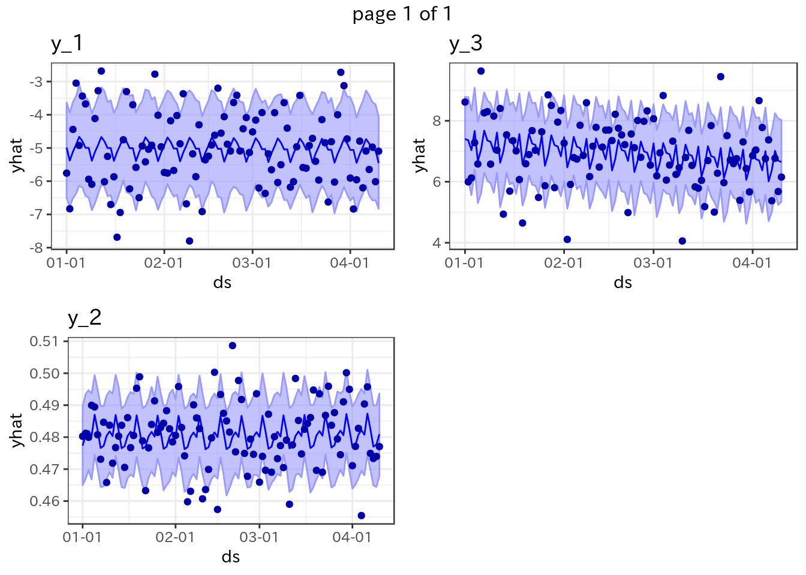

3 Case 3: Nested df問題
3.1 Question 3
以下のようなデータがあります:
set.seed(57)
library(tidyverse)
library(lubridate)
library(prophet)
start_date = "2019-01-01"
n = 100
df_4 <- data.frame(
yyyymmdd = seq(date(start_date), date(start_date) + days(n - 1), by = "day"),
y_1 = sin(n) * 10 + rnorm(n),
y_2 = sin(n) * 3 + rnorm(n, 2, 0.01),
y_3 = cos(n) * 8 + rnorm(n)
)
knitr::kable(head(df_4))| yyyymmdd | y_1 | y_2 | y_3 |
|---|---|---|---|
| 2019-01-01 | -5.757423 | 0.4802741 | 8.615518 |
| 2019-01-02 | -6.830485 | 0.4812141 | 5.996507 |
| 2019-01-03 | -4.441120 | 0.4799585 | 6.123853 |
| 2019-01-04 | -3.046980 | 0.4899672 | 7.284474 |
| 2019-01-05 | -4.922723 | 0.4894491 | 6.583605 |
| 2019-01-06 | -3.437993 | 0.4807437 | 9.632790 |
このy_*に対して、prophetで予測させて未来のデータもあわせて作成したいです:
| y_var | ds | yhat | yhat_lower | yhat_upper | y |
|---|---|---|---|---|---|
| y_1 | 2019-01-01 | -4.988744 | -6.498488 | -3.384716 | -5.757423 |
| y_1 | 2019-01-02 | -5.378460 | -6.842081 | -3.815985 | -6.830485 |
| y_1 | 2019-01-03 | -5.113240 | -6.610575 | -3.731660 | -4.441120 |
| y_1 | 2019-01-04 | -4.901305 | -6.258661 | -3.484424 | -3.046980 |
| y_1 | 2019-01-05 | -4.663884 | -6.151910 | -3.336566 | -4.922723 |
| y_1 | 2019-01-06 | -4.793852 | -6.307509 | -3.414466 | -3.437993 |
| y_1 | 2019-01-07 | -4.998286 | -6.480009 | -3.494410 | -3.673579 |
| y_1 | 2019-01-08 | -4.993733 | -6.425913 | -3.536153 | -5.941644 |
| y_1 | 2019-01-09 | -5.383449 | -6.830365 | -4.008951 | -6.092223 |
| y_1 | 2019-01-10 | -5.118228 | -6.462090 | -3.545616 | -4.112209 |
3.2 Answer
こんな感じでOKです:
m <- function(d) {
# fitting model. ここは各自ががんばってください
model <- prophet(d)
# forecast
future <- make_future_dataframe(model, periods = 7)
forecast <- predict(model, future)
# 欲しい部分を抽出して加工
res <- forecast %>%
mutate(ds = date(ds)) %>%
select(ds, yhat, yhat_lower, yhat_upper) %>%
right_join(d)
# return
return(res)
}
df_4_result <- df_4 %>%
gather(key = y_var, value = y, -yyyymmdd) %>%
rename(ds = yyyymmdd) %>%
group_by(y_var) %>%
nest() %>%
mutate(fit = map(data, m)) %>%
select(y_var, fit) %>%
unnest()
knitr::kable(head(df_4_result, 10))| y_var | ds | yhat | yhat_lower | yhat_upper | y |
|---|---|---|---|---|---|
| y_1 | 2019-01-01 | -4.988744 | -6.452807 | -3.509133 | -5.757423 |
| y_1 | 2019-01-02 | -5.378460 | -6.912193 | -4.018997 | -6.830485 |
| y_1 | 2019-01-03 | -5.113240 | -6.575139 | -3.735088 | -4.441120 |
| y_1 | 2019-01-04 | -4.901305 | -6.342179 | -3.391854 | -3.046980 |
| y_1 | 2019-01-05 | -4.663884 | -6.120531 | -3.264734 | -4.922723 |
| y_1 | 2019-01-06 | -4.793852 | -6.252291 | -3.396149 | -3.437993 |
| y_1 | 2019-01-07 | -4.998286 | -6.445208 | -3.590837 | -3.673579 |
| y_1 | 2019-01-08 | -4.993733 | -6.497540 | -3.644810 | -5.941644 |
| y_1 | 2019-01-09 | -5.383449 | -6.968824 | -3.936416 | -6.092223 |
| y_1 | 2019-01-10 | -5.118228 | -6.627071 | -3.736248 | -4.112209 |
3.3 解説
3.3.1 考え方
典型的なnested-df案件で、purrr::mapが本領発揮するケースです。｢繰り返しやること｣は関数化して、それをpurrr::mapでまとめましょう。
流れは以下のとおりです:
- modelingと必要な値を抽出する処理を関数化
- 使うデータセットをtidyに
- nest化
- nest化したデータのそれぞれに準備した関数を当て、その結果を新たな列としてmutate
- 必要な部分だけ取り出してunnest
3.3.2 手順
まずはモデリングして整形する関数を作成します:
m <- function(d) {
# fitting model. ここは各自ががんばってください
model <- prophet(d)
# forecast
future <- make_future_dataframe(model, periods = 7)
forecast <- predict(model, future)
# 欲しい部分を抽出して加工
res <- forecast %>%
mutate(ds = date(ds)) %>%
select(ds, yhat, yhat_lower, yhat_upper) %>%
right_join(d)
# return
return(res)
}このケースではprophetで予測しています。prophet便利ですよね。関数を作成したら、まずはこの関数単体でちゃんと動くか、実際にデータを渡してテストしてください。なお、ここで関数化している理由はいろいろありますが、このようにモデリング処理を関数化することによってモデルを修正していくコストを減らずことが大きいです。実際モデリングは何度も何度も繰り返すので、メンテしやすくしておくのは大切です。
あとはデータフローとなります。nest化を行います:
res <- df_4 %>%
gather(key = y_var, value = y, -yyyymmdd) %>%
rename(ds = yyyymmdd) %>%
group_by(y_var) %>%
nest()
res
#> # A tibble: 3 x 2
#> y_var data
#> <chr> <list>
#> 1 y_1 <tibble [100 × 2]>
#> 2 y_2 <tibble [100 × 2]>
#> 3 y_3 <tibble [100 × 2]>group_byしてからnestすることで、データを層別化できます。一部を取り出してみると、こんな感じです:
res$data[[2]]
#> # A tibble: 100 x 2
#> ds y
#> <date> <dbl>
#> 1 2019-01-01 0.480
#> 2 2019-01-02 0.481
#> 3 2019-01-03 0.480
#> 4 2019-01-04 0.490
#> 5 2019-01-05 0.489
#> 6 2019-01-06 0.481
#> 7 2019-01-07 0.473
#> 8 2019-01-08 0.485
#> 9 2019-01-09 0.466
#> 10 2019-01-10 0.484
#> # … with 90 more rowsあとは｢各行のdataに対してmodeling｣します。ポイントは｢新たな列として、関数処理した結果を追加する｣というイメージです:
res <- res %>%
mutate(fit = map(data, m))今回作成したmという関数は、実測値(y)と予測値(yhat)および予測の上限･下限を含むdata.frameを返します。そのため、以下のような感じになります:
res
#> # A tibble: 3 x 3
#> y_var data fit
#> <chr> <list> <list>
#> 1 y_1 <tibble [100 × 2]> <data.frame [100 × 5]>
#> 2 y_2 <tibble [100 × 2]> <data.frame [100 × 5]>
#> 3 y_3 <tibble [100 × 2]> <data.frame [100 × 5]>
res$fit[[2]] %>% head()
#> ds yhat yhat_lower yhat_upper y
#> 1 2019-01-01 0.4773502 0.4649810 0.4897357 0.4802741
#> 2 2019-01-02 0.4805435 0.4670079 0.4934888 0.4812141
#> 3 2019-01-03 0.4819156 0.4696508 0.4946583 0.4799585
#> 4 2019-01-04 0.4804376 0.4667566 0.4936465 0.4899672
#> 5 2019-01-05 0.4870225 0.4744456 0.4993775 0.4894491
#> 6 2019-01-06 0.4821182 0.4700115 0.4949034 0.4807437あとは、これを普段使うdata.frameのような感じに展開したいのですが、これはunnestでOKです:
res <- res %>%
select(y_var, fit) %>%
unnest()3.3.3 応用
今回のデータをy_varをkeyとして横に展開したい場合もあるでしょうが、これはすでにケース1で紹介しているので省略します。
また多くの場合、これをggplot2などでplotすると思います。これもnest化してやってしまいましょう:
# plotする部分を関数化
f_p <- function(df, var_name) {
ggplot(df, aes(x = ds)) +
# geom
geom_ribbon(aes(ymin = yhat_lower, ymax = yhat_upper), color = "#9999FF", fill = "#9999FF99") +
geom_line(aes(y = yhat), color = "#0000FF") +
geom_point(aes(y = y), color = "#0000AA") +
# scales
scale_x_date(date_labels = "%m-%d") +
# theme & labs
theme_bw() +
labs(title = var_name)
}
res <- res %>%
group_by(y_var) %>%
nest() %>%
mutate(plot = map2(data, y_var, f_p))
res$plot %>% gridExtra::marrangeGrob(nrow = 2, ncol = 2)